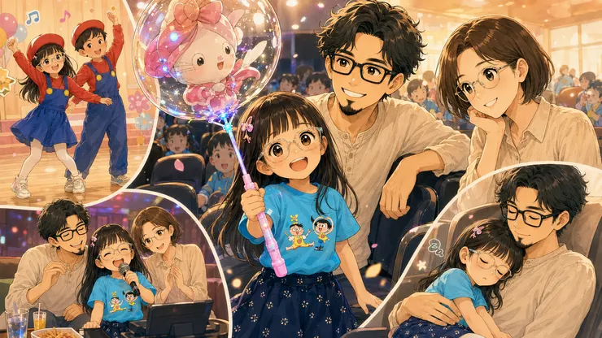
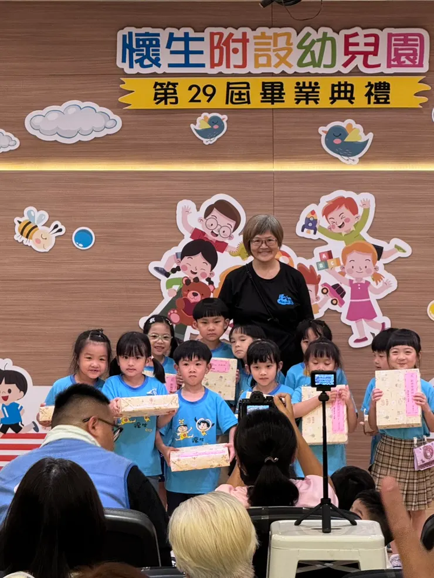
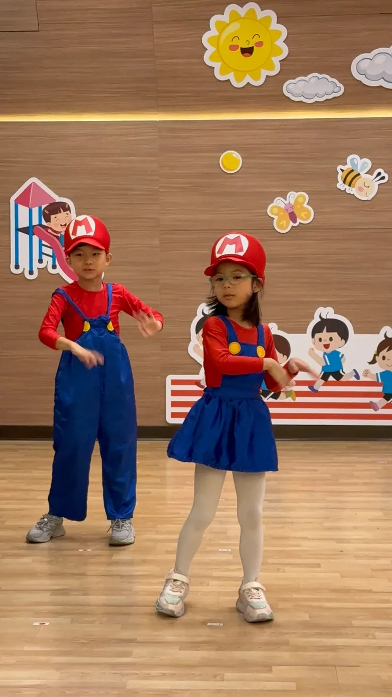
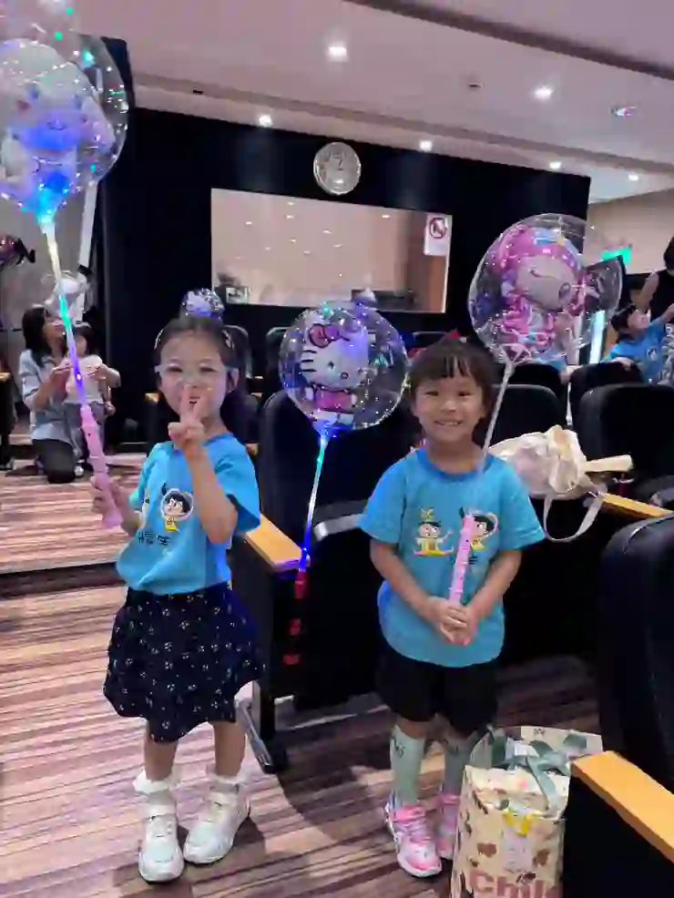
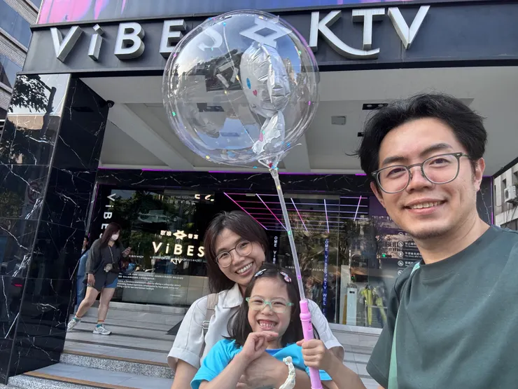
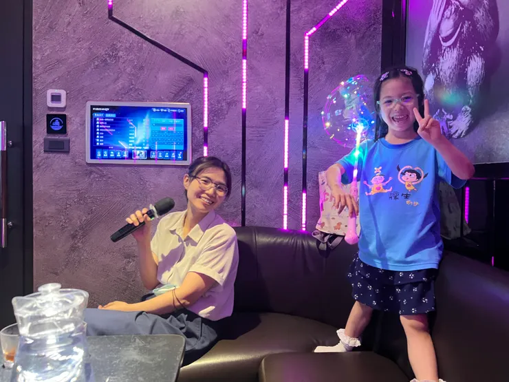
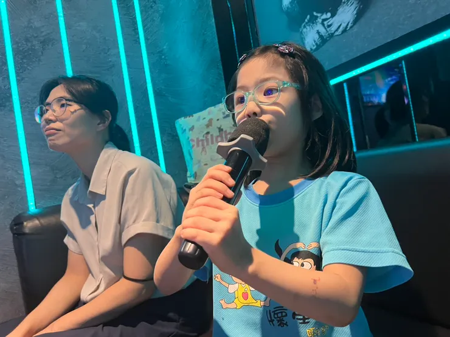
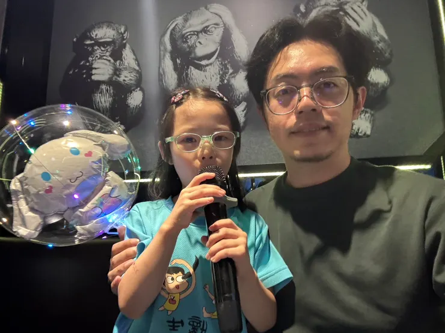

最愛唱唱跳跳的鼠姊姊，最近開心地邀請爸爸媽媽到幼稚園參加蘋果班的畢業典禮。
雞爸爸參加的不只是一場畢業典禮
老實說，雞爸爸原本參加這場典禮的目的很單純——就是來幫鼠姊姊拍照、錄影，留下她在舞台上唱唱跳跳的模樣。不過到了現場才發現，這不只是一場畢業典禮。

對這所混齡幼兒園來說，畢業典禮也是中、小班孩子們送給大班哥哥姊姊的祝福。孩子們輪番上台表演，唱歌、跳舞、歡笑聲不斷；熱鬧之後，畢業的大蘋果們也一一分享感言。
當聽見熟悉的朋友即將升上小學、離開幼兒園時，鼠姊姊也露出了捨不得的表情。
那一刻我才發現，原來孩子之間的友情，遠比大人想像得更真誠。

典禮流程都是老師的精心安排
孩子玩得開心，家長看得投入，老師們則像幕後導演一樣，把每個環節串聯得恰到好處。最讓人驚喜的是，活動尾聲老師還準備了手工製作的發光氣球。
鼠姊姊一路拿著氣球走在路上，竟然有好幾位路人主動上前詢問：
「這個氣球好可愛，是在哪裡買的？」
那種被大家稱讚的得意表情，大概也是孩子童年裡最珍貴的小幸福之一。

發生了老師們意想不到的插曲
典禮中還有一個臨時增加的環節，幾位畢業生家長自發性地準備了禮物送給老師。
原本還能維持專業笑容的老師們，在接過禮物後終於破防了。
有人紅了眼眶，有人講話開始哽咽，有人邊笑邊擦眼淚。
那一瞬間很能感受到，老師平常的付出其實都被看見了。
或許教育工作最珍貴的回報，不是獎金，也不是掌聲，而是在某一天突然發現，自己的用心真的留在了孩子和家長心裡。ps.為保護當事人，哭得唏哩嘩啦的老師照片就不放了xd
鼠姊姊的願望清單
這一天既然是屬於鼠姊姊的日子，鼠媽媽也豪氣宣布：今天的願望，通通滿足。
於是鼠姊姊立刻展開了自己的「畢業典禮願望清單」：中午吃石二鍋、下午去唱 KTV、晚上要吃薩利亞披薩，完全沒有在客氣的。
其中最讓雞爸爸意外的，是第一次去體驗的ViBES KTV。六歲以下小朋友不用收費，對親子家庭相當友善。
鼠姊姊進包廂就像回到自己的主場，從Baby Monster到Black Pink，還有李竺芯、五月天、Adele一首接一首完全沒有冷場，各國語言、KPOP、RAP、抒情歌曲樣樣精通。
雞爸爸回家編輯錄音檔時發現，總共點了 35 首歌，她一個人就唱了超過 20 首。
雞爸爸忽然覺得，平常在家裡被迫聽演唱會的日子，好像終於有了回報：這票價，值了。




等到晚餐吃完薩利亞、準備回家牽車時，白天那個精力無限的小女孩終於沒電了。從餐廳到停車場，從停車場到車上，從車上再到床上。
雞爸爸一路用公主抱完成最後的收尾。
看著懷裡睡得香甜的鼠姊姊，突然有種奇妙的感覺。
對大人來說，只是一場幼兒園的畢業典禮；對孩子來說，這可能是和朋友們的重要告別；而對父母來說，則是又一次提醒自己：原來孩子真的正在長大，那些唱歌、跳舞、抱著發光氣球奔跑的日子，也正在悄悄變成回憶。
或許多年後，鼠姊姊未必記得自己唱了哪些歌，但雞爸爸會記得：
記得那天她笑得特別燦爛，唱得特別大聲，也幸福得特別理直氣壯❤️